Working from the terminal 101
In this tutorial, we will learn how to use the terminal to interact with the computer. We will cover the following topics:
- What is the terminal and why do we use it
- How to open the terminal
- How to navigate the file system
- Making, copying, moving and deleting files
- Inspecting files
- Writing and executing scripts
- The remote cluster
From my experience (and the experience of others), the best way to learn how to work from the terminal is to learn by doing. Therefore, I strongly recommend that you follow the practicals in the tutorial.
DISCLAIMER: This is an absolute-beginners tutorial, so only the basics will be covered. If you want to do more sophisticated stuff, I recommend using LLMs. They are quite good at it.
What is the terminal and why do we use it
Normally, when we use a computer, a tablet or a smartphone, we touch or click on icons to open files or applications and we use a mouse or a touch screen to navigate through the system. This is called a graphical user interface (GUI) — graphical, because it uses visual elements (e.g. icons) and interface, because it serves as an intermediate between the user and the operating system (OS), i.e. the software that manages the computer’s hardware and applications.
There is, however, another way to interact with the computer: the command line interface (CLI). The CLI is an interface that is based on text commands. This means that, instead of clicking on icons, we type commands to tell the computer what to do. We type these commands in the terminal. The terminal is a program that provides access to the command line interface (CLI).
But, if the GUI is so easy and intuitive, why would we want to use the CLI? Although it is true that the GUI is more user-friendly and that quick actions (e.g., opening a file or navigating through directories), there are several reasons to use the CLI:
- Automation: The CLI allows us to automate repetitive tasks by writing scripts. This is especially useful when we have to process large amounts of data or perform complex operations. For example, if we have to rename hundreds of files, we can write a script that does it for us in a few seconds, instead of doing it manually one by one.
- Remote access: The CLI allows us to access and control remote computers, such as servers or clusters, through a network connection. This is useful when we want to run programs or analyze data on a powerful machine that is not physically accessible to us. This will be especially relevant for us, because we will be using the ILF cluster to run our analyses.
- Efficiency: The CLI is often faster and more efficient than the GUI, especially for advanced users who are familiar with the commands. For example, we can perform complex operations with a single command, instead of navigating through multiple menus and windows.
- Reproducibility: We can save the exact commands we typed into a script or a text file. This is important if someone else wants to do the same analysis in the future, or even if we ourselves want to repeat it — you’ll be amazed how easy it is to forget the steps you made in the past! By saving the commands, we can ensure that the analysis can be reproduced exactly as it was done before.
How to open the terminal
Enough with the talking! Let’s open the terminal and start using it. The way to open the terminal depends on the operating system (OS) we are using. The most common OSs are Windows, macOS and Linux.
- Windows: The terminal is called Command Prompt or PowerShell. To open it, we can search for “cmd” or “PowerShell” in the Start menu and click on the corresponding application. Alternatively, we can use the keyboard shortcut
Win + R, type “cmd” or “powershell” and press Enter. - macOS: The terminal is called Terminal. To open it, we can search for “Terminal” in Spotlight (the magnifying glass icon in the top right corner) and click on the corresponding application. Alternatively, we can use the keyboard shortcut
Cmd + Space, type “Terminal” and press Enter. - Linux: The terminal is called Terminal or Console. To open it, we can search for “Terminal” in the application menu and click on the corresponding application. Alternatively, we can use the keyboard shortcut
Ctrl + Alt + T.
In my case (macOS), when I open it, I see something like this:
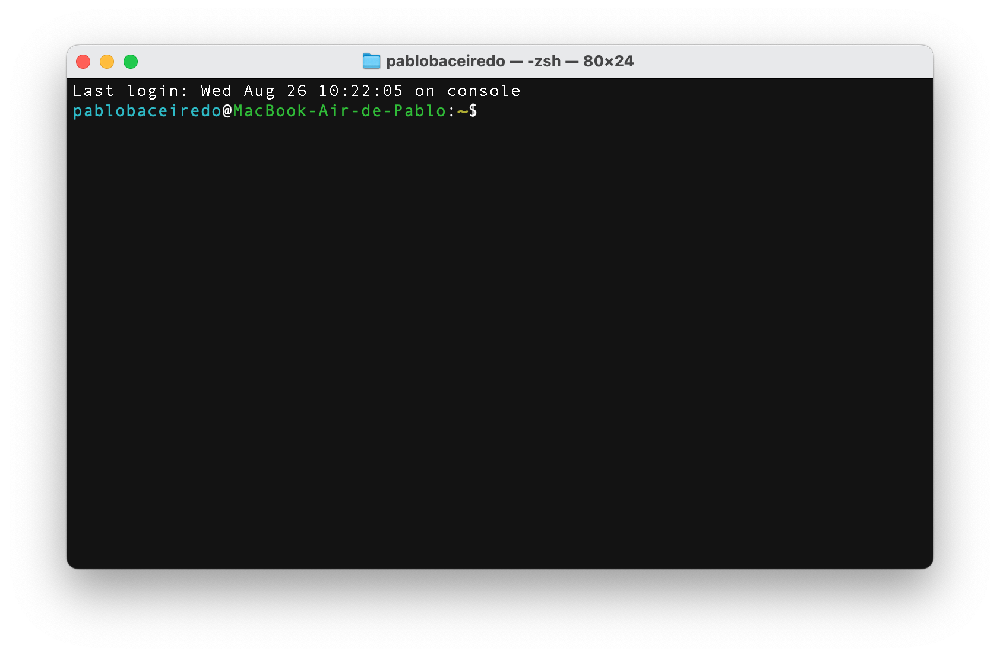
You should be able to write commands after the $ symbol. The $ symbol is called the prompt and it indicates that the terminal is ready to receive commands. The prompt may look different depending on the OS, the shell (the program that interprets the commands) and the configuration, but it usually ends with a $, >, or # symbol.
Making, copying, moving and deleting files
Moving is great and all, but we also want to create files and directories, copy them and move them around. Let’s see how to do that.
Create a new directory
To create a new directory within the working directory, we can use the mkdir command (which stands for make directory), followed by the name of the new directory. For example, if we want to create a new directory called my_dir, we can use the following command:
mkdir my_dirLet’s create it and check that it is there:
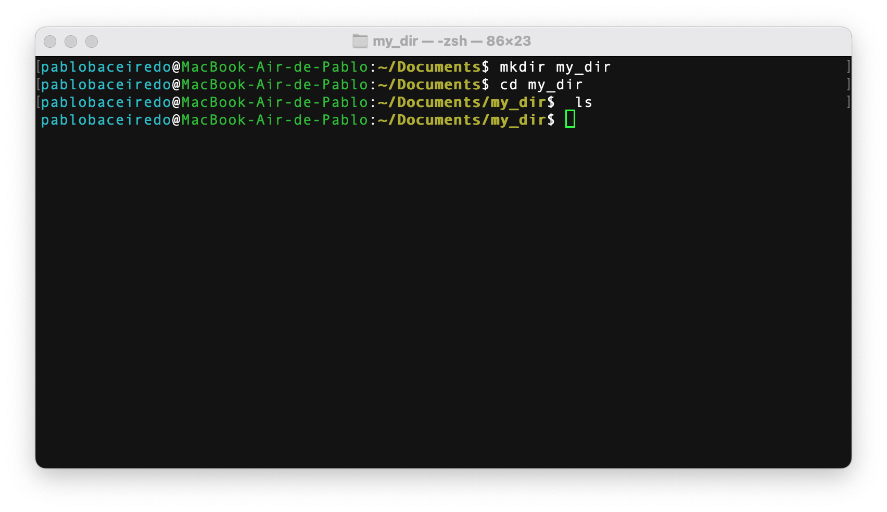
As we expected, the new directory my_dir is empty, because there is no output to ls.
Create a new file
We can create files using different commands. One of them is the nano command, which opens a text editor in the terminal. We can use it to create a new file and write some text in it. For example, if we want to create a new file called my_file.txt, we can use the following command:
nano my_file.txtThis will open the nano text editor, where we can write some text. Once we are done, we can save the file by pressing Ctrl + O, then press Enter to confirm the file name, and finally exit the editor by pressing Ctrl + X. Let’s try it:
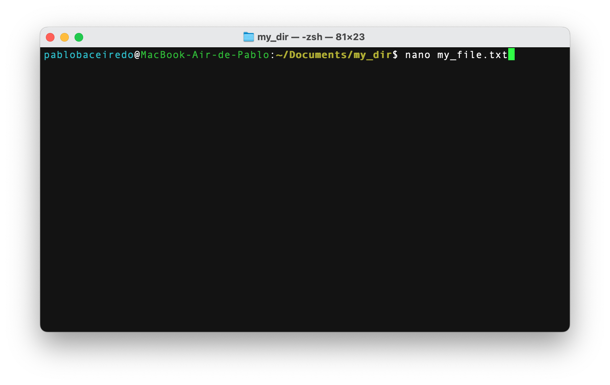
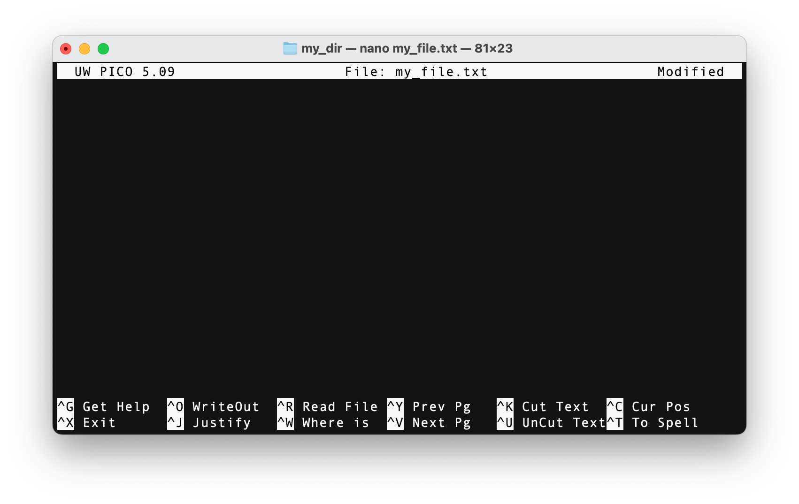
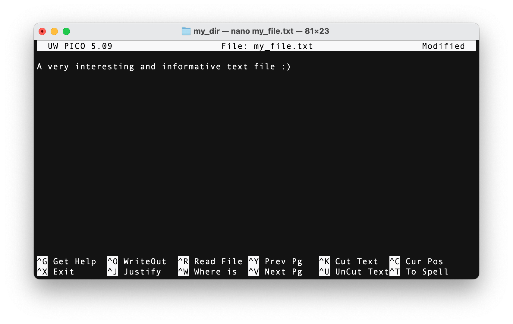
As you see, we created the file my_file.txt, wrote some text in it, saved it and closed it. Then, we can check that it is there by using the ls command:
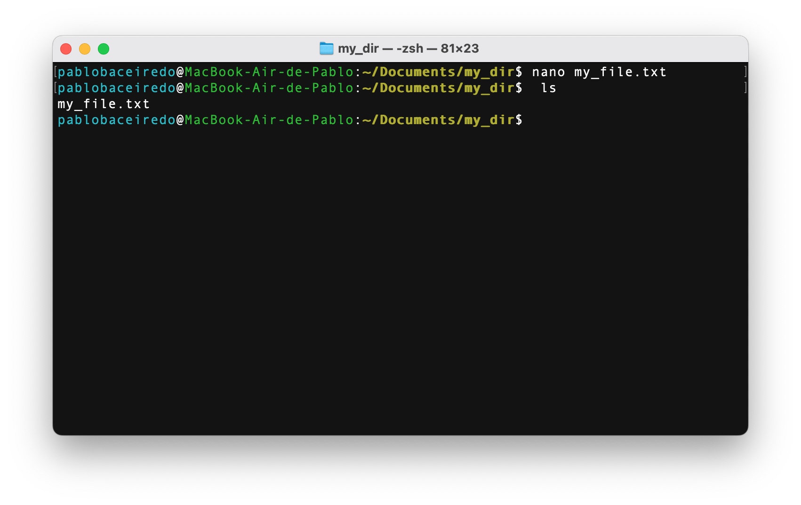
A very widespread alternative to nano is vim (or vi), which is a more powerful text editor, but also more complex to use. You are free to learn how vi/vim works, and we highly recommend using an LLM (like ChatGPT) to help you with that.
Moving and copying files
To copy files, we can use the cp command (which stands for copy), followed by the source file and the destination file. For example, if we want to copy the file my_file.txt to a new file called my_file_copy.txt, we can use the following command:
cp my_file.txt my_file_copy.txtWe can also copy files to another directory. For example, if we want to copy the file my_file.txt to the directory my_dir, we can use the following command:
cp my_file.txt my_dir/my_file.txtWe can also copy directories and their contents using the -r option (which stands for recursive). For example, if we want to copy the directory my_dir and all its contents to a new directory called my_dir_copy, we can use the following command:
cp -r my_dir my_dir_copyNote that copying a file to another directory does not remove the original file, it just creates a new copy of it in the destination directory. If we want to move a file (i.e., remove it from the source directory and place it in the destination directory), we can use the mv command (which stands for move), followed by the source file and the destination file. For example, if we want to move the file my_file.txt to the directory my_dir, we can use the following command:
mv my_file.txt my_dir/my_file.txtOnce again, you can also move directories and their contents using the mv command. For example, if we want to move the directory my_dir to a new directory called my_dir_moved, we can use the following command:
mv my_dir my_dir_movedRemoving files and directories
Eliminating files and directories is also very easy, but one must be extremely careful. When we remove a file or directory using the terminal, it is gone forever and there is no way to recover it. This is different from the GUI, because
- there is no trash or recycle bin in the terminal, and
- there is no confirmation prompt before deleting a file or directory.
Therefore, the removing commands should be used with caution. To remove a file, we can use the rm command (which stands for remove), followed by the name of the file. For example, if we want to remove the file my_file.txt, we can use the following command:
rm my_file.txtAnd then the file is gone forever. Check the following example: we first create a file called my_file.txt, check that it is there using ls, then we remove it, and finally we check that it is gone:
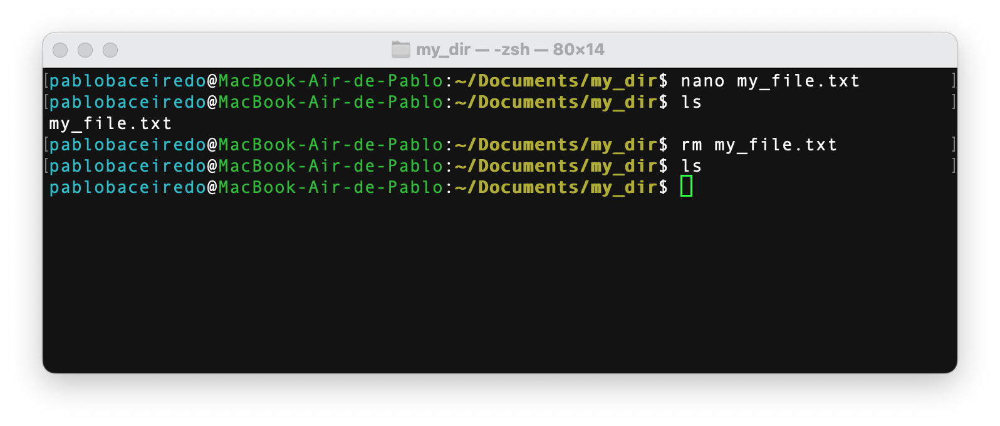
There are 3 important options that we can use with the rm command:
-i(interactive): This option prompts us for confirmation before removing a file. After being asked, we should typeyto confirm ornto cancel. For example:
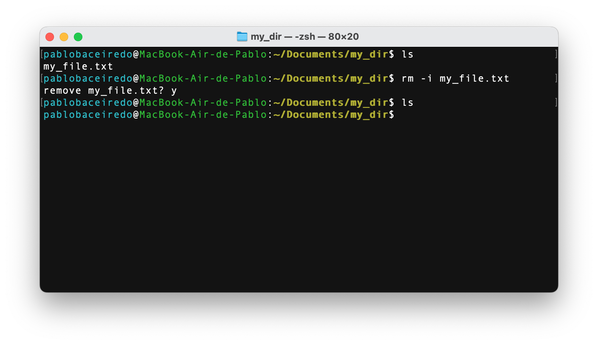
-r(recursive): If we try to remove a whole directory (and all its contents) using justrm, the system will print a warning. Therefore, if we want to remove a directory and all its contents, we can use the-roption. Note that using the-roption will remove all files and subdirectories within the specified directory, so use it with caution. For example, if we want to remove the directorymy_dirand all its contents:
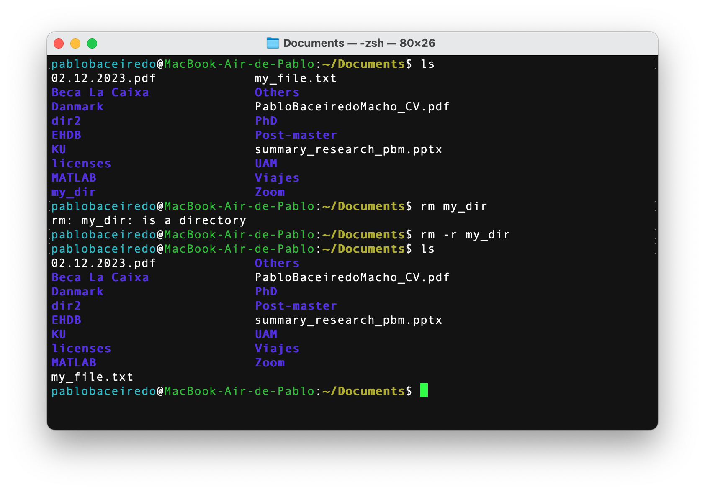
-f(force): This option forces the removal of files and directories without prompting for confirmation, even if they are locked or protected. This is a very dangerous option, because it will remove everything without asking, so we strongly recommend not using it unless you are absolutely sure of what you are doing.
WARNING! The nuclear option rm -rf. When you combine the -r and -f options, you get the rm -rf command, which is a very powerful and dangerous command that can delete entire directories and their contents without any confirmation. This command should be used with extreme caution, because it can easily lead to data loss if used incorrectly. Especially, never use it with the root directory (/), because it will delete everything in your system and render it unusable. You wouldn’t be the first to lose their entire operating system by accidentally typing rm -rf / instead of rm -rf *. Therefore, we strongly recommend not using this command unless you are absolutely sure of what you are doing.
Inspecting files
Displaying the content of a file
When we use nano or vim to create a file, we can also use them to read the contents of a file. However, there are other commands that are more suitable for this task, because they allow us to read files without opening a text editor. The command we use will be different depending on the action we want to perform.
cat(concatenate): This command allows us to read the entire contents of a file and print it to the terminal. It is nice for short files, but do not use it for huge files, because it will print everything at once and you will have to scroll through it (also possibly crashing your terminal).less: For large files, we can use thelesscommand, which allows us to read the contents of a file one page at a time. We can scroll through the file using the arrow keys or the space bar, and we can exit by pressingq.headandtail: These commands allow us to read the beginning or end of a file, respectively. For example,head my_file.txtwill display the first 10 lines of the file, whiletail my_file.txtwill display the last 10 lines. You can change the number of lines displayed by using the-noption, e.g.head -n 20 my_file.txtwill display the first 20 lines of the file.
For example, a file called numbers.txt contains the numbers 1 to 20, one per line. Thus, if we use the commands explained above, we get the following outputs:
cat command:
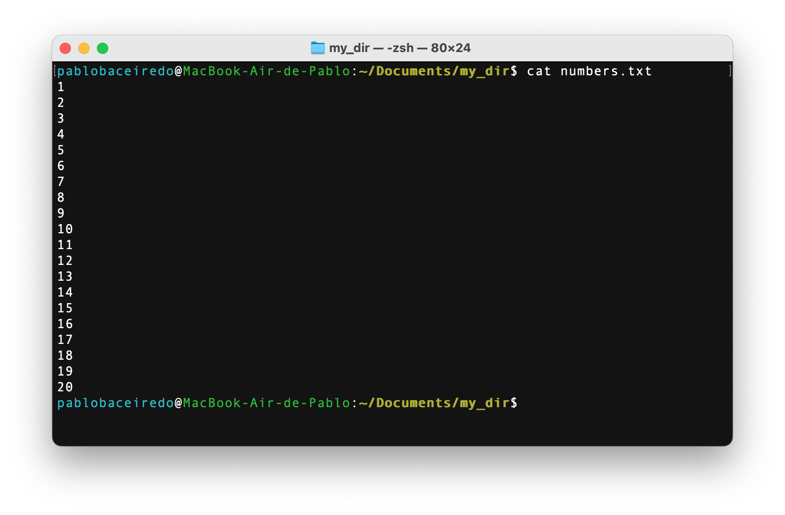
less command (1) — We press enter and see the output in a new screen:
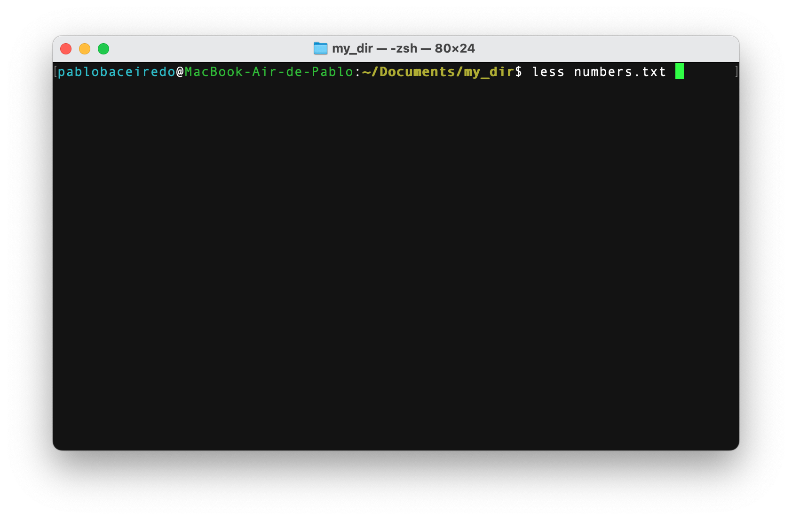
less command (2) — We can scroll through the file using the arrow keys or the space bar. When we are done, we can exit by pressing q:
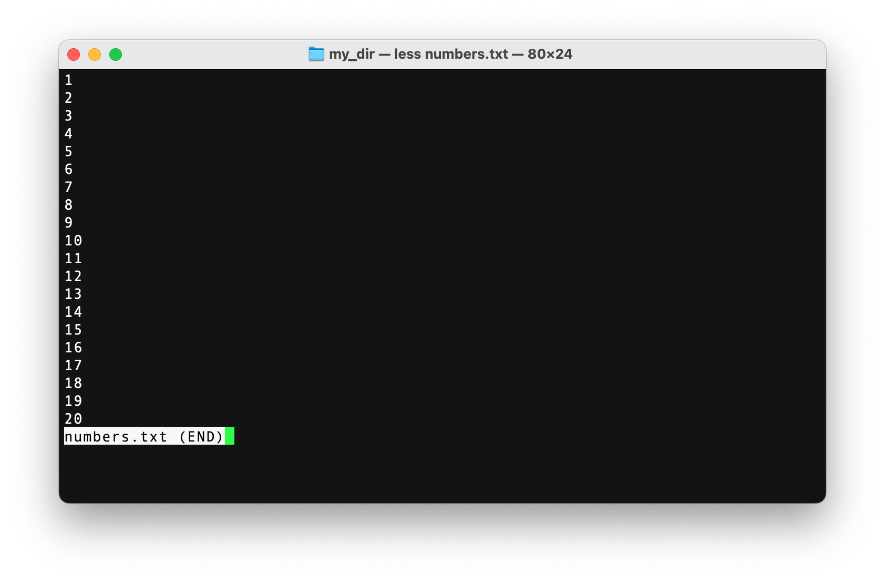
head and tail commands:
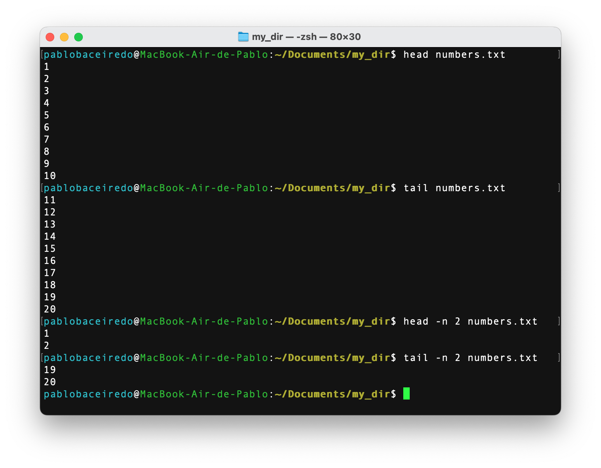
Finding matches and counting lines, words and characters
Sometimes we want to find a specific word, number or string in a file, or count the number of lines, words and characters in a file. If the file is small, we can do it manually with the commands above, sure. However, you will find that it is way easier and more efficient to use specific commands for this.
grep: This command allows us to search for a specific word, number or string in a file. For example,grep "9" numbers.txtwill display all the lines that contain the number 9 in the file. We can also use options to modify the behaviour of the command, e.g.-ito ignore case,-nto show line numbers, etc. You are free to ask ChatGPT for more information about the differentgrepoptions.
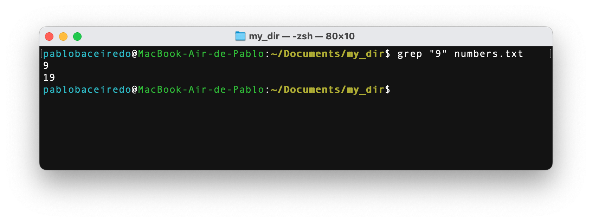
wc(word count): This command allows us to count the number of lines, words, and characters in a file. For example,wc my_file.txtwill display the number of lines, words, and characters in the file (in that order). You can also use options to count only lines (-l), words (-w), or characters (-c). For example,wc -l my_file.txtwill display only the number of lines in the file.
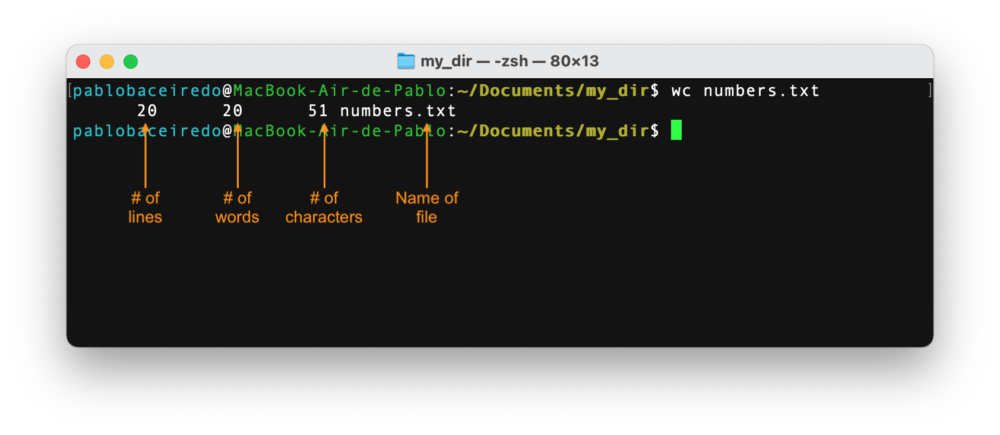
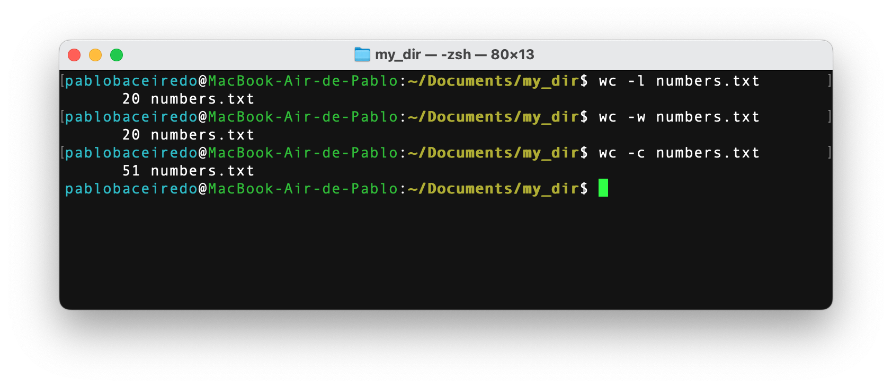
Writing and executing scripts
Bash scripts
Writing one command at a time is fine for simple tasks, but when we want to perform more complex operations or automate repetitive tasks, it is better to write a script. A script is a file that contains a series of commands that can be executed in sequence. Here, we will focus on bash scripts, which are scripts written for the bash shell (the default shell in most Linux and macOS systems).
To create a bash script, we can use a text editor (e.g., nano or vim) to create a new file with the .sh extension. The script must:
- Start with a shebang line (
#!/bin/bash). This line just tells the operating system which interpreter to use to execute the script. If we are using a different language (e.g., Python, R, etc.), we would use a different shebang line (e.g.,#!/usr/bin/env pythonfor Python). - Contain the commands we want to execute, one per line2.
- Be made executable using the
chmodcommand. By default, a new file is not executable, so we need to change its permissions to allow execution. To do so, we just use thechmodcommand with the+x(add execute) option, followed by the name of the script (more onchmodand access rights in the appendix).
For instance, let’s create a simple bash script called my_script.sh that prints the current working directory and lists the files in it. I’ll use vi to create the script, but you can use any text editor you like.
vi my_script.sh # or 'nano my_script.sh'This will open the text editor. There, we can write the following lines:
#!/bin/bash # Shebang line: always the first line of a bash script
# here we include the commands
echo "Current working directory:" # 'echo' simply prints to screen whatever is stated next to the command
pwd # returns the current working directory
echo "Files and directories in this directory:"
ls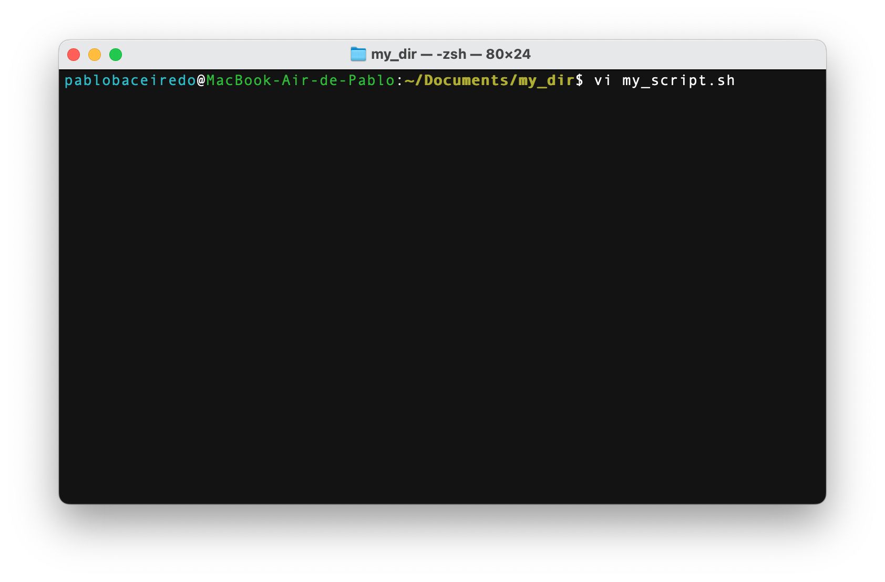
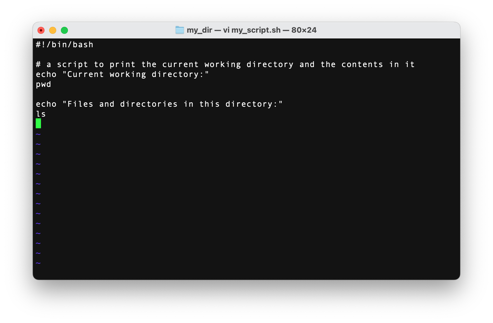
We save it and close the text editor. Feel free to check whether the script file is there!
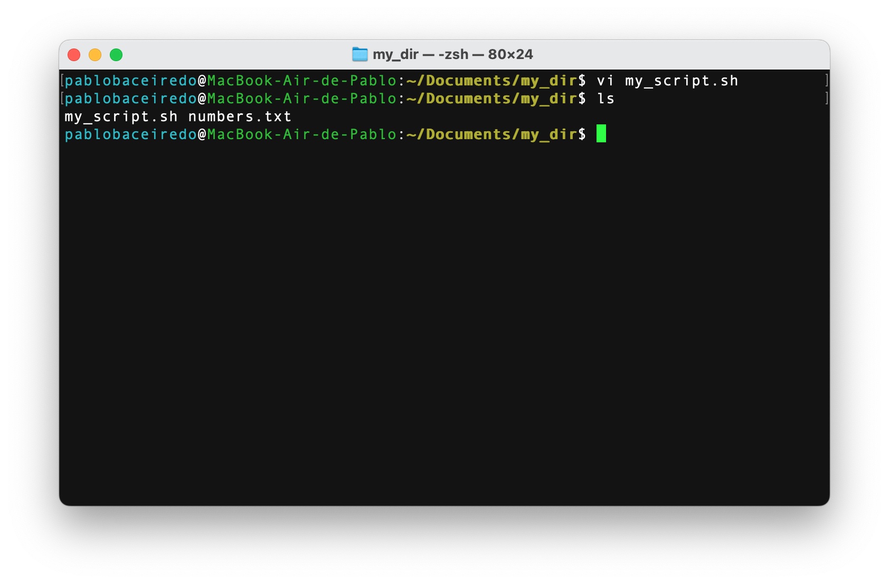
Now, how do we execute it? Remember that first we need to be able to execute it, or, in technical terms, have execution permission. By default, no new files are ready to be executed because the don’t have execution permission, so we need to change the access rights. We do that with the chmod command followed by +x and the file name, which basically means ‘change file mode to add execution permission to this file.’
chmod +x my_script.shNow, if you list the directory, you’ll see that the file name changed colors! That shows that it has been made executable.
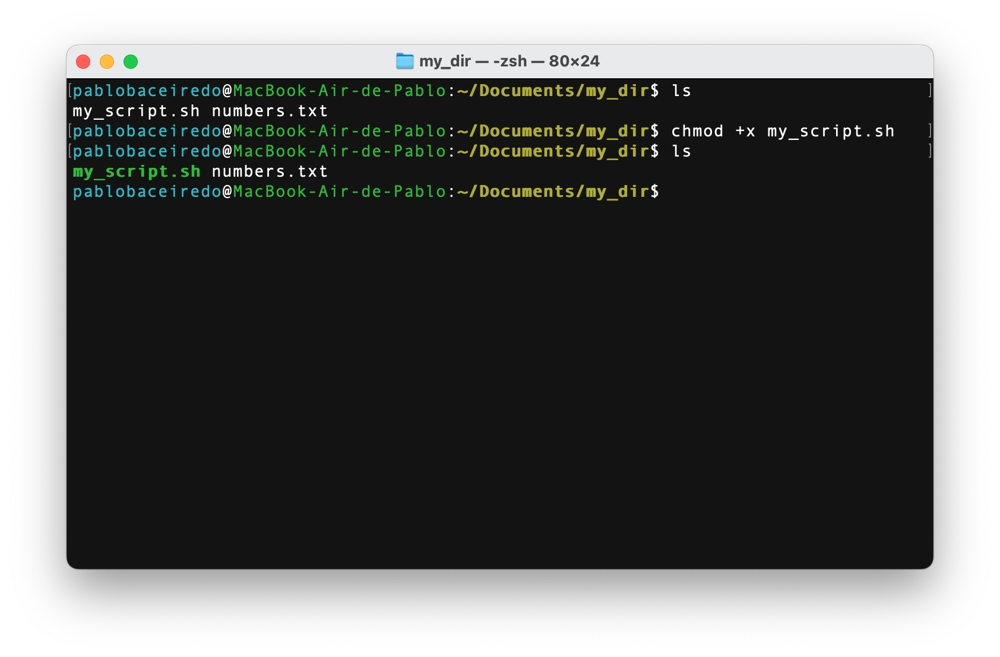
And how do we actually run the script? To do so, we just type the script file name, with ./. Remember that the . means ‘this directory’, so ./my_script.sh would just mean ‘in this directory, run my_script.sh.’
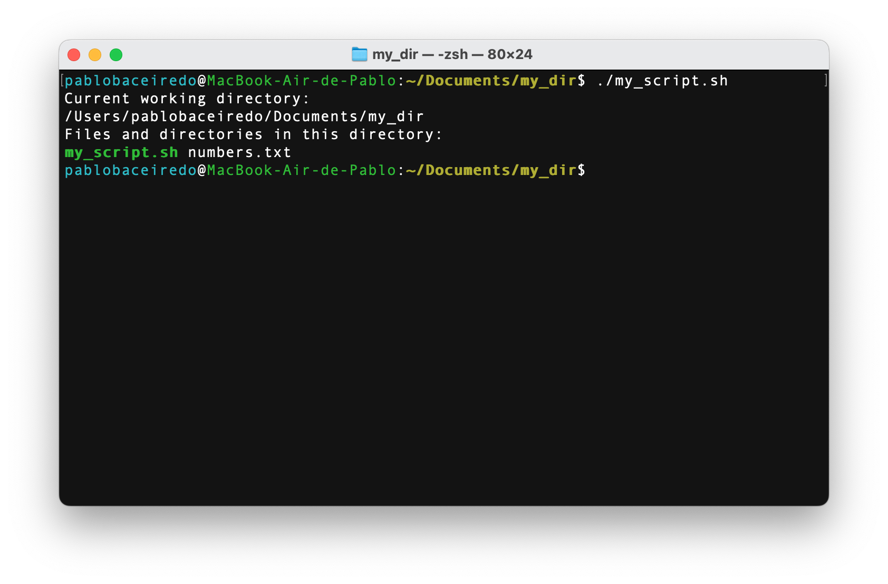
Bear in mind that this only works if the script is in the same directory where you are running in it from. If the script is in a different directory, we would need to write the path (absolute or relative) to it. For example, if my_script.sh was in the parent directory (i.e. in the directory just above to ours), we would run it like this:
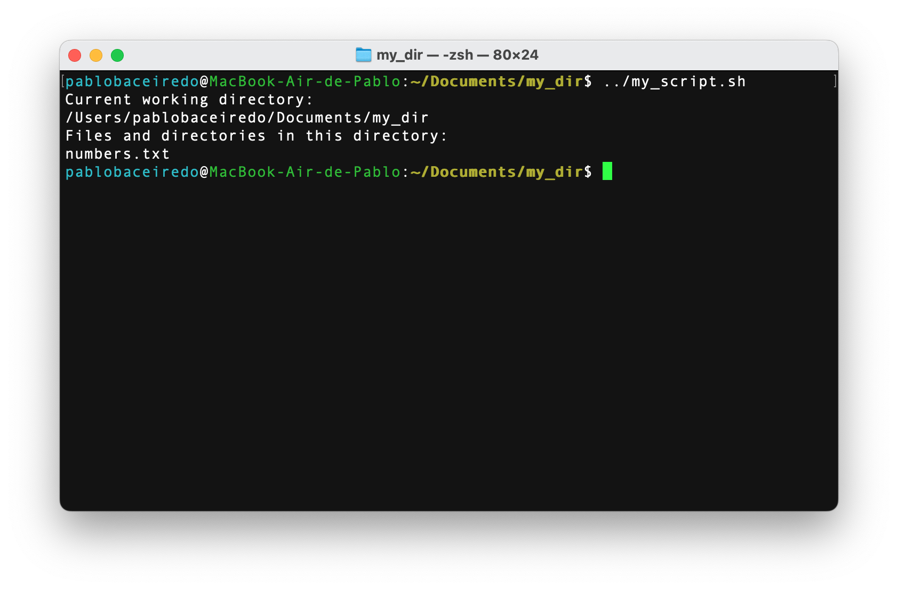
Or, if it were in the directory ~/Documents/dir2, we would run it like this:
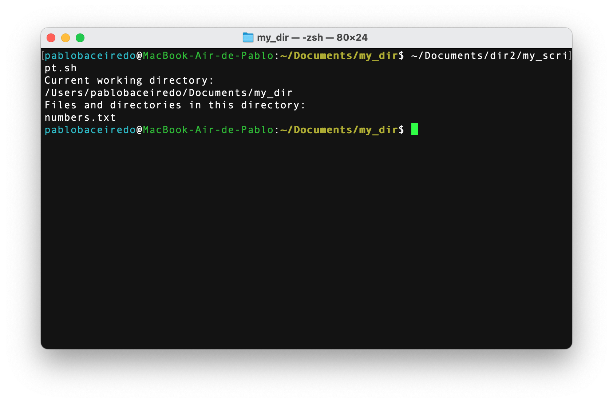
Note that, either way, the output (i.e. the current working directory that is printed and the list of items in it) always refers to the directory where the script is being runned from (not the directory where the script lies).
Python scripts
Similarly to writing and executing bash scripts, one can write and execute scripts in other programming languages. Here, I will explain how to do it in Python, but it is similar in other languages (e.g., R).
In general, the procedure is the same: we create a file (in this case, with the .py extension), write our code and run it. The most important differences with running bash scripts are:
- The Python shebang: Because we are using a different language, we need the system to use a different interpreter. Before, we used
#!/bin/bash, now we’ll use#!/usr/bin/env python. - Running the code: We can run the Python script in 2 ways:
- Explicitly, by typing
python my_script.py. This calls Python explictily, letting the system know that it is a Python file. This way we don’t need to change execution permissions. This is the most usual way to do it.
python my_script.py- Making the file executable (using
chmod +x) and then running it directly as before (./my_script.py). The system will know what programming language it is written in thanks to the shebang.
chmod +x my_script.py # change permissions ./my_script.py # run it - Explicitly, by typing
- Conda environments: These are especially important when working on a remote cluster (more on that later). A conda environment is simply a self-contained directory that holds a specific version of Python and a specific set of packages (Python tools), separated from the rest of the computer. This is useful because different research projects need different packages and even different versions of the same packages, so it is handy to have them in separate ‘toolboxes’. These toolboxes are the environments. You will find more about the conda environments in the appendix.
The remote cluster
Working in your own computer is great. However, your research will eventually be too large or demanding for your PC. This can happen if your dataset is too massive to fit in your PC’s memory or if a script takes a long time to finish running.
To solve this problem, we have remote clusters (or servers). A remote cluster is simply a computer that is located in a data center or other facility. These clusters are a collection of individual computers, called nodes, that allow us to split large tasks into smaller pieces so that many nodes can work simultaneously and our scripts and jobs can finish way quicker than they would in our PC. This is called high-performance computing, or HPC.
The brain inside each node can be of 2 different types:
- CPU (Central Processing Unit): CPUs can handle very complex tasks that might be done in a sequence (i.e. you cannot do step B until step A finishes). However, they normally don’t have a lot of cores, so not many things can be done simultaneously.
- GPU (Graphics Processing Unit): GPUs cannot perform tasks as complex as those performed by CPUs, but they can perform a lot of tasks at the same time because they contain thousands of cores. Therefore, they are great to do the exact same simple operation to millions of data points simultaneously3.
We use HPC clusters to do our work for 3 reasons:
- Memory: Many of our files are larger than what our RAM can handle, so it is impossible to open them in our PCs.
- Time: Running a molecular simulation in our PC would take ages (I mean it: it would take years). Splitting the calculations across the GPU cores reduces this time to the order of days.
- Parallel computing: We can run the exact same analysis thousands of times simultaneously, without having to run it one after the next one.
Here at the Department for Drug Design and Pharmacology we use the ILF Grid. You can find more information about it in the ILF Grid Wiki but I will cover the very basics now.
Connecting to the cluster
Okay, but how do we access this remote computer?
To do so, we first need to connect our VPN. HPC clusters have expensive hardware and sensitive data, so they are not available in the public internet. The VPN (Virtual Private Network) creates a safe and encrypted connection between your PC and the university internet, letting you access the cluster no matter where you are.
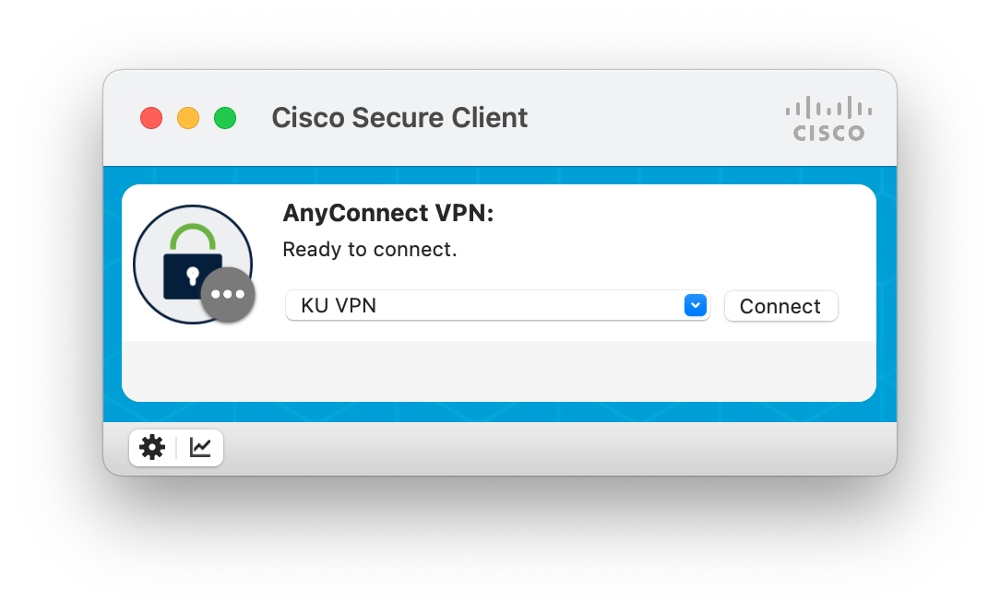
Once connected to the VPN, we need to log in to the cluster. We do this using SSH (Secure Shell), which creates an encrypted tunnel. In particular, to access the ILF Cluster we write:
ssh abc123@ilfgridgate # 'abc123' is your KU ID (swedish licence plate)Then it will ask you to introduce your password. You will notice that nothing will be shown to screen —not even the ’*’— but, don’t worry, your password is being typed.
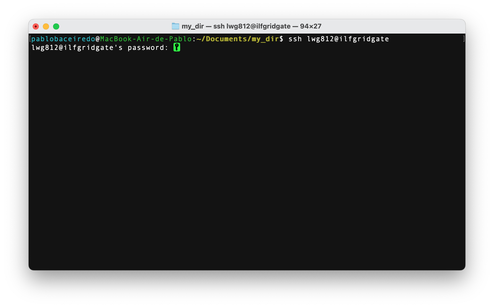
Once accepted, you will have landed in the login node. Note that we can know that we are in a remote cluster by reading the part in blue and green before the current directory (yellow). The blue part is the username (it changed to my KU ID) and the part in green is the hostname (changed from my device’s hostname to the ILF Grid hostname)4.
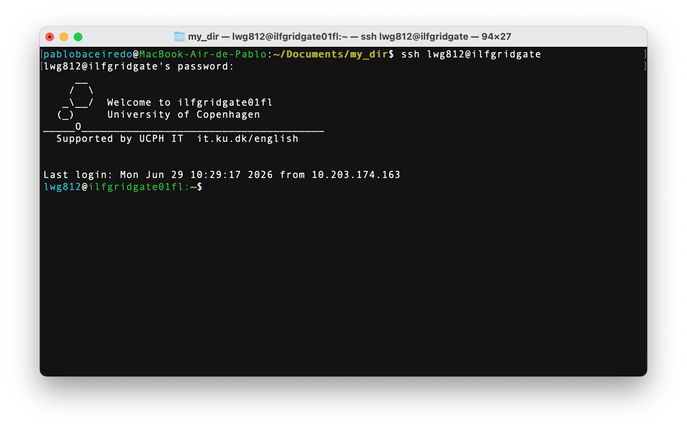
Submitting jobs
The login node is simply the ‘lobby’ where you enter the cluster. You can manage files, navigate directories, edit scripts, check job status… However, you should never run heavy computations (e.g. molecular simulations) on the login node. That is a job for the compute node.
The compute node is the powerhouse that executes the heavy jobs. The compute node is protected and cannot be accessed directly. Instead, one can send jobs to run in the compute node using a job scheduler, which allocates access to the computational resources, manages the job queue and executes our scripts. The ILF Grid uses Slurm (though there exist other ones).
Here I will cover the very basics on how to submit jobs to the compute node using Slurm. You are welcome to ask ChatGPT et al. on how to do it more sophisticatedly.
- Create a batch script. A batch script is just a regular bash script (with the
.shextension) but it has a particular header. The header is just a set of lines at the very top of the script which contain a set of guidelines on how to run the script (subset and number of nodes being used, number of CPU cores, amount of RAM, etc.). - Submitting the script. The batch script is sent to the job scheduler using the
sbatchcommand followed by the file name of the script. A script submitted to run at the compute node is commonly refered to as a job.
For example, if we want to run the script my_job.sh at the compute node, we would just do the following:
sbatch my_job.shAfter this, we will get a job ID which will serve us to identify it. You can check the queue of all the jobs being run or pending to be run in the department by writing squeue. If you write squeue -u abc123 (where abc123 is your KU ID) you can check the progress of your jobs.
Transfering files to and from the cluster
Very frequently you will have to upload some file or directory present in your own PC to the cluster, or vice versa: get something that is in the cluster into your own PC. To do so, it is not as simple as grabbing files and moving them around with the mouse, as we are used to doing in the GUIs of our PCs. We need to something a bit more painstaking. The process is pretty much identical whether you want to transfer files to or from the cluster.
- In the terminal in your own computer (i.e. not connected to the cluster), navigate to the directory you want to transfer files to or from. Let’s say I want to move a file named
transfer.txtthat exists in my remote cluster directory~/my_remote_dirto my local directory~/Documents/my_dir. First, I would need to go to~/Documents/my_dir.
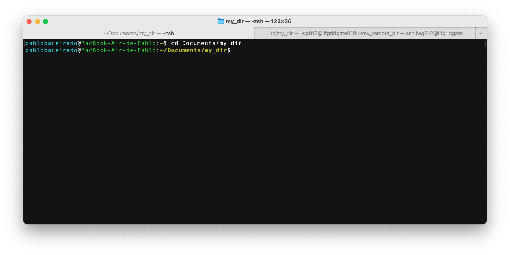
- There, we connect to the cluster using sftp:
sftp abc123@sftp.ku.dk. Once again, it will ask your password and an authentication method.
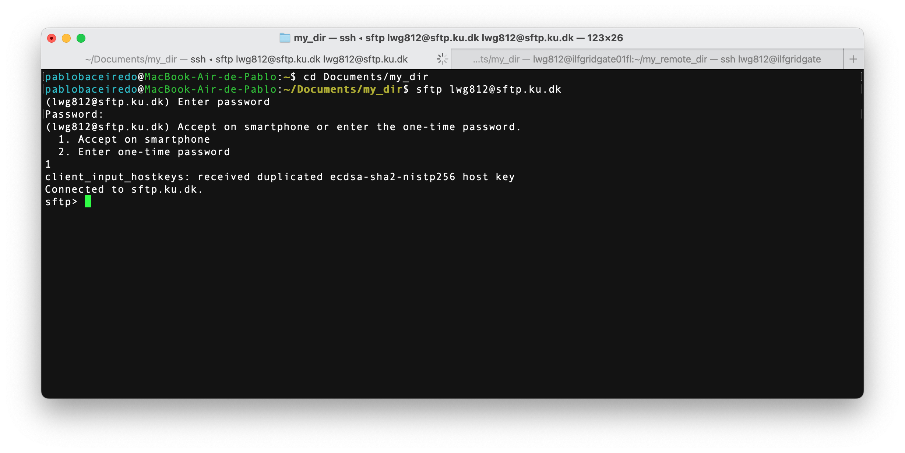
- Now we are once again connected to the cluster. From there, we navigate to the directory were
transfer.txtis (in case we want to get the file from the cluster; if we want to put it into the cluster, we navigate to the directory where we want to put the file into). The easiest way to do this is to go to the terminal with our remote connection, typingpwdand pasting it tocd. Once there, we check that our desired file is there
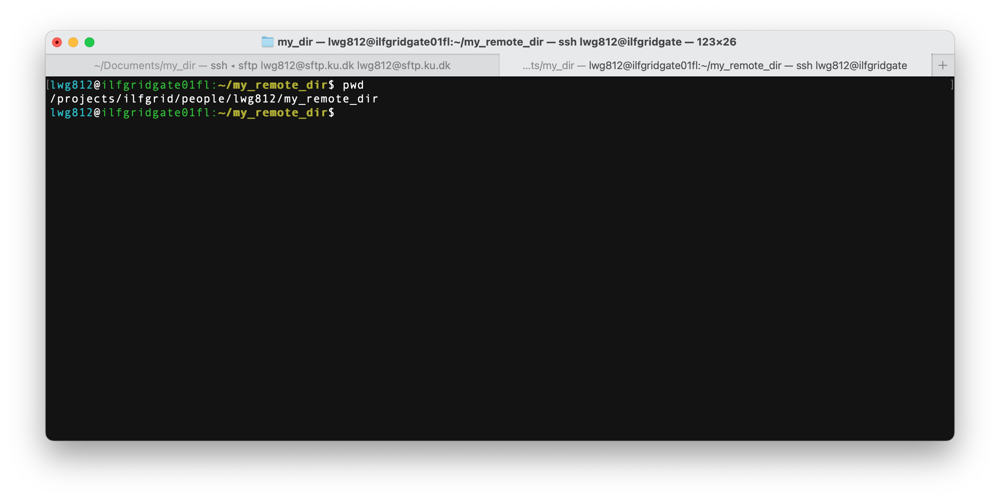
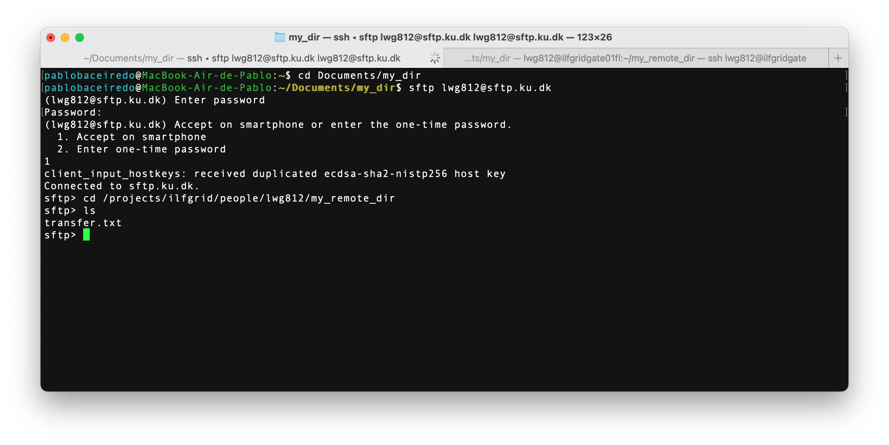
- Now we get the file using
get transfer.txt. You will see a confirmation line printed to the screen.
- Note 1: If we had wanted to put the file in the remote cluster, we do
put transfer.txt. - Note 2: We can also transfer whole directories. To do so, we need add the flag
-r, e.g.get -r my_remote_dir.
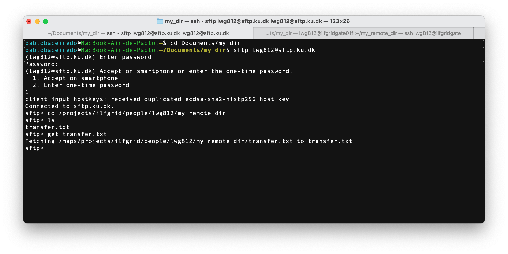
Now we can close our connection with sftp. To close connection either with sftp or the cluster itself, we do Ctrl + D.
Exercises
I know this can be a lot of information to digest and, by the end of the text, I’m sure you will have forgotten half of it5. Eventually you will learn all of this by heart but, for the time being, I have prepared some treasure hunting-like exercises for you to put all this into practice. Enjoy!
Appendix 1: Access rights
Appendix 2: Conda environments
Footnotes
Don’t worry if you don’t see the colors, you shouldn’t, it depends on the configuration of your terminal.↩︎
It is good practice to include comments explaining what the command do. We can do this by adding a
#at the beginning of the line. The#will indicate that the line is a comment and will not be executed.↩︎Such as —you guessed it— molecular simulations!↩︎
Again, you might not see these colors, but no reason to worry about it.↩︎
Best-case scenario, worst-case scenario you never even made it to the end so you are not even reading this.↩︎